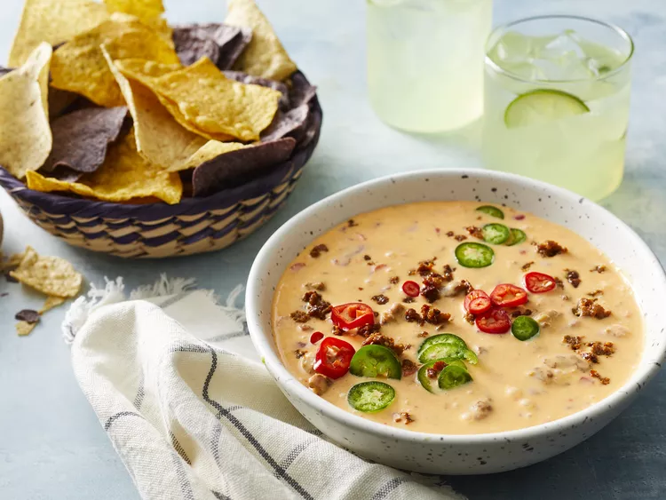

Back to Homepage
Chorizo Queso Dip

Description
This Chorizo Queso Dip is a creamy, spicy, and utterly addictive appetizer perfect for any gathering. It combines the rich, savory flavors of chorizo with a smooth, melted cheese blend, creating a dip that's sure to be a crowd-pleaser. Serve it with tortilla chips, veggies, or your favorite dippers!
The combination of spicy chorizo and melty cheese makes for a perfect dip. Its easy to make and always a hit!
Ingredients
- 1 lb Mexican Chorizo, removed from casing
- 16 oz Velveeta Cheese, cubed
- 1 (10 oz) can Rotel Diced Tomatoes and Green Chilies, undrained
- 1/2 cup Milk or Half-and-Half (optional, for thinner consistency)
- 1/4 cup chopped Cilantro (optional, for garnish)
- Tortilla Chips, for serving
Steps
- In a large skillet over medium-high heat, cook the chorizo, breaking it up with a spoon, until browned. Drain any excess grease.
- Reduce heat to low. Add the Velveeta cheese and Rotel to the skillet. Stir until the cheese is completely melted and smooth.
- If the dip is too thick, stir in milk or half-and-half until desired consistency is reached.
- Remove from heat and transfer to a serving dish.
- Garnish with chopped cilantro, if desired.
- Serve warm with tortilla chips.